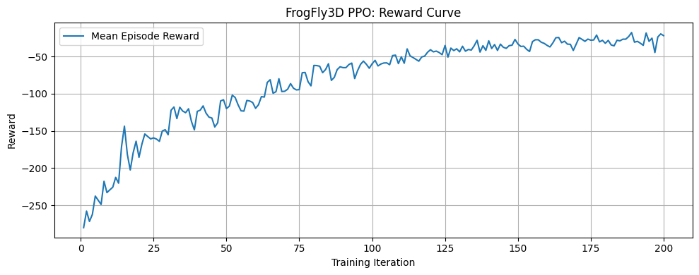

import numpy as np
import matplotlib.pyplot as plt
from matplotlib import animation
from mpl_toolkits.mplot3d import Axes3D # noqa: F401 (needed for 3D)
import gymnasium as gym
from gymnasium import spaces
import ray
from ray.rllib.algorithms.ppo import PPOConfig
Frog–Fly 3D Reinforcement Learning Environment (PPO)
Frog–Fly 3D Reinforcement Learning Environment (PPO)
This environment simulates a frog navigating a bounded 3D space to catch a fly.
The agent observes continuous-valued states, produces continuous 3D actions, and learns using PPO.
Environment Definition
\[ \mathcal{S} = \{(x,y,z) \mid x,y,z \in [-1,1]\} \]
At timestep (t):
\[ \mathbf{p}^{(t)}_f \in \mathcal{S}, \qquad \mathbf{p}^{(t)}_{\text{fly}} \in \mathcal{S} \]
Agent Dynamics
Action:
\[ \mathbf{a}_t \in [-1,1]^3 \]
Frog motion:
\[ \mathbf{p}^{(t+1)}_f = \mathrm{clip}\!\left(\mathbf{p}^{(t)}_f + \alpha \cdot \mathbf{a}_t,\, [-1,1]^3\right) \]
Fly motion (stochastic):
\[ \mathbf{p}^{(t+1)}_{\text{fly}}= \mathrm{clip}\!\left( \mathbf{p}^{(t)}_{\text{fly}} + v_{\text{fly}}\cdot\frac{\epsilon}{\|\epsilon\|},\, [-1,1]^3\right), \qquad \epsilon\sim\mathcal{N}(0,I) \]
Observation Space
\[ \mathbf{s}_t = [ \mathbf{p}^{(t)}_f,\, \mathbf{p}^{(t)}_{\text{fly}},\, \mathbf{p}^{(t)}_{\text{fly}}-\mathbf{p}^{(t)}_f,\, PE(\mathbf{p}^{(t)}_f),\, PE(\mathbf{p}^{(t)}_{\text{fly}}) ] \]
Positional encoding:
\[ PE(\mathbf{p}) = [ \sin(\omega_k x),\cos(\omega_k x),\; \sin(\omega_k y),\cos(\omega_k y),\; \sin(\omega_k z),\cos(\omega_k z) ]_{k=1}^{K} \]
Action Space
\[ \mathcal{A} = [-1,1]^3 \]
The policy outputs a continuous displacement vector for movement.
Reward Function
Distance:
\[ d_t = \|\mathbf{p}^{(t)}_{\text{fly}} - \mathbf{p}^{(t)}_{f}\| \]
Reward shaping:
\[ r_t = \begin{cases} -\,d_t, & \text{not caught},\\[6pt] 10 - d_t, & \text{if } d_t < \delta. \end{cases} \]
Goal → minimize distance + catch fly efficiently.
PPO Objective
Probability ratio:
\[ r_t(\theta) = \dfrac{\pi_\theta(a_t\,|\,s_t)} {\pi_{\theta_{\text{old}}}(a_t\,|\,s_t)} \]
Advantage:
\[ A_t = \sum_{k=0}^{T-t} \gamma^k r_{t+k} - V_\phi(s_t) \]
Clipped surrogate:
\[ J(\theta) = \mathbb{E}_t \Big[ \min( r_t(\theta)A_t,\, \text{clip}(r_t(\theta),1-\epsilon,1+\epsilon)A_t )\Big] \]
Value loss:
\[ L_V(\phi)=\mathbb{E}_t[(V_\phi(s_t)-R_t)^2] \]
Final optimization:
\[ \max_\theta J(\theta), \qquad \min_\phi L_V(\phi) \]
MDP Summary
| Element | Definition |
|---|---|
| State (s_t) | positions + relative vector + positional encodings |
| Action (a_t) | continuous 3D movement vector |
| Reward (r_t) | shaped distance + capture bonus |
| Goal | catch fly efficiently |
| Algorithm | PPO |
def positional_encoding_3d(pos, num_freqs=4, max_freq=10.0):
"""
pos: np.array shape (3,) with (x, y, z) in [-space_size, space_size].
Returns: encoding vector of shape (3 * 2 * num_freqs,)
"""
pos = np.asarray(pos, dtype=np.float32)
assert pos.shape == (3,)
freqs = np.linspace(1.0, max_freq, num_freqs)
enc = []
for coord in pos: # x, y, z
for f in freqs:
enc.append(np.sin(f * coord))
enc.append(np.cos(f * coord))
return np.array(enc, dtype=np.float32)
class FrogFly3DEnv(gym.Env):
"""
3D continuous environment:
- Frog (agent) moves to catch a moving fly.
- Observations: positions + relative vector + positional encodings.
"""
metadata = {"render_modes": ["human"], "render_fps": 30}
def __init__(self, config=None):
super().__init__()
if config is None:
config = {}
self.space_size = float(config.get("space_size", 1.0))
self.step_size = float(config.get("step_size", 0.1))
self.fly_speed = float(config.get("fly_speed", 0.05))
self.catch_radius = float(config.get("catch_radius", 0.15))
self.max_steps = int(config.get("max_steps", 200))
self.num_freqs = int(config.get("num_freqs", 4))
self.use_positional_encodings = bool(
config.get("use_positional_encodings", True)
)
# Action = 3D movement in [-1, 1]^3
self.action_space = spaces.Box(
low=-1.0, high=1.0, shape=(3,), dtype=np.float32
)
# Observation components
# frog_pos (3) + fly_pos (3) + rel (3) = 9
base_dim = 9
if self.use_positional_encodings:
pe_dim = 3 * 2 * self.num_freqs # per position
obs_dim = base_dim + 2 * pe_dim
else:
obs_dim = base_dim
self.observation_space = spaces.Box(
low=-5.0, high=5.0, shape=(obs_dim,), dtype=np.float32
)
self.frog_pos = None
self.fly_pos = None
self.steps = 0
# ---------- Helpers ----------
def _sample_position(self):
return np.random.uniform(
low=-self.space_size,
high=self.space_size,
size=(3,),
).astype(np.float32)
def _clip_position(self, pos):
return np.clip(pos, -self.space_size, self.space_size).astype(np.float32)
def _get_obs(self):
rel = self.fly_pos - self.frog_pos
parts = [self.frog_pos, self.fly_pos, rel]
if self.use_positional_encodings:
frog_pe = positional_encoding_3d(self.frog_pos, self.num_freqs)
fly_pe = positional_encoding_3d(self.fly_pos, self.num_freqs)
parts.extend([frog_pe, fly_pe])
return np.concatenate(parts, axis=0).astype(np.float32)
def _get_distance(self):
return float(np.linalg.norm(self.fly_pos - self.frog_pos))
# ---------- Gymnasium API ----------
def reset(self, seed=None, options=None):
super().reset(seed=seed)
self.steps = 0
self.frog_pos = self._sample_position()
self.fly_pos = self._sample_position()
obs = self._get_obs()
info = {}
return obs, info
def step(self, action):
self.steps += 1
action = np.asarray(action, dtype=np.float32)
action = np.clip(action, -1.0, 1.0)
# Frog moves
self.frog_pos = self.frog_pos + self.step_size * action
self.frog_pos = self._clip_position(self.frog_pos)
# Fly moves randomly
fly_dir = np.random.normal(size=(3,)).astype(np.float32)
fly_dir /= np.linalg.norm(fly_dir) + 1e-8
self.fly_pos = self.fly_pos + self.fly_speed * fly_dir
self.fly_pos = self._clip_position(self.fly_pos)
dist = self._get_distance()
caught = dist < self.catch_radius
# Reward shaping: closer is better + bonus for catch
reward = -dist
if caught:
reward += 10.0
terminated = caught
truncated = self.steps >= self.max_steps
obs = self._get_obs()
info = {"distance": dist, "caught": caught}
return obs, reward, terminated, truncated, info
def render(self):
print(
f"Step {self.steps} | "
f"Frog: {self.frog_pos} | Fly: {self.fly_pos} | "
f"Dist: {self._get_distance():.3f}"
)
def close(self):
pass
ray.shutdown()
ray.init(ignore_reinit_error=True)
env_config = {
"space_size": 1.0,
"step_size": 0.1,
"fly_speed": 0.05,
"catch_radius": 0.15,
"max_steps": 200,
"num_freqs": 4,
"use_positional_encodings": True,
}
config = (
PPOConfig()
# ⬇️ IMPORTANT: pass the *class* here
.environment(env=FrogFly3DEnv, env_config=env_config)
.framework("torch")
.resources(num_gpus=0)
.training(
model={
"fcnet_hiddens": [256, 256],
"fcnet_activation": "tanh",
},
gamma=0.99,
lr=3e-4,
)
)
algo = config.build()
print("Algo built OK")2025-11-29 13:36:02,157 INFO worker.py:2023 -- Started a local Ray instance.
(SingleAgentEnvRunner pid=79565) DeprecationWarning: `RLModule(config=[RLModuleConfig object])` has been deprecated. Use `RLModule(observation_space=.., action_space=.., inference_only=.., model_config=.., catalog_class=..)` instead. This will raise an error in the future!
2025-11-29 13:36:05,182 WARNING rl_module.py:459 -- DeprecationWarning: `RLModule(config=[RLModuleConfig object])` has been deprecated. Use `RLModule(observation_space=.., action_space=.., inference_only=.., model_config=.., catalog_class=..)` instead. This will raise an error in the future!
2025-11-29 13:36:06,279 WARNING util.py:61 -- Install gputil for GPU system monitoring.Algo built OKnum_iterations = 200
mean_rewards = []
mean_lengths = []
for i in range(num_iterations):
result = algo.train()
# Newer RLlib: metrics under "env_runners"
if "env_runners" in result:
env_metrics = result["env_runners"]
mean_r = env_metrics.get("episode_return_mean", np.nan)
mean_l = env_metrics.get("episode_len_mean", np.nan)
else:
# Older RLlib: metrics at top level
mean_r = result.get("episode_reward_mean", np.nan)
mean_l = result.get("episode_len_mean", np.nan)
mean_rewards.append(mean_r)
mean_lengths.append(mean_l)
print(
f"Iter {i+1:03d} | "
f"reward_mean = {mean_r:.3f} | "
f"len_mean = {mean_l:.2f}"
)(pid=gcs_server) [2025-11-29 13:36:31,515 E 79554 63203182] (gcs_server) gcs_server.cc:303: Failed to establish connection to the event+metrics exporter agent. Events and metrics will not be exported. Exporter agent status: RpcError: Running out of retries to initialize the metrics agent. rpc_code: 14
(raylet) [2025-11-29 13:36:32,106 E 79558 63203272] (raylet) main.cc:979: Failed to establish connection to the metrics exporter agent. Metrics will not be exported. Exporter agent status: RpcError: Running out of retries to initialize the metrics agent. rpc_code: 14
(SingleAgentEnvRunner pid=79565) [2025-11-29 13:36:32,728 E 79565 63203522] core_worker_process.cc:837: Failed to establish connection to the metrics exporter agent. Metrics will not be exported. Exporter agent status: RpcError: Running out of retries to initialize the metrics agent. rpc_code: 14
[2025-11-29 13:36:32,894 E 79225 63203322] core_worker_process.cc:837: Failed to establish connection to the metrics exporter agent. Metrics will not be exported. Exporter agent status: RpcError: Running out of retries to initialize the metrics agent. rpc_code: 14Iter 001 | reward_mean = -280.136 | len_mean = 193.20
Iter 002 | reward_mean = -257.787 | len_mean = 188.83
Iter 003 | reward_mean = -271.765 | len_mean = 189.60
Iter 004 | reward_mean = -262.372 | len_mean = 185.76
Iter 005 | reward_mean = -237.619 | len_mean = 180.16
Iter 006 | reward_mean = -243.282 | len_mean = 184.44
Iter 007 | reward_mean = -248.877 | len_mean = 184.32
Iter 008 | reward_mean = -217.721 | len_mean = 176.64
Iter 009 | reward_mean = -232.963 | len_mean = 184.24
Iter 010 | reward_mean = -229.211 | len_mean = 186.06
Iter 011 | reward_mean = -225.733 | len_mean = 185.80
Iter 012 | reward_mean = -212.468 | len_mean = 182.46
Iter 013 | reward_mean = -220.304 | len_mean = 192.44
Iter 014 | reward_mean = -171.321 | len_mean = 168.72
Iter 015 | reward_mean = -143.614 | len_mean = 148.10
Iter 016 | reward_mean = -181.501 | len_mean = 167.68
Iter 017 | reward_mean = -202.537 | len_mean = 177.20
Iter 018 | reward_mean = -179.273 | len_mean = 170.40
Iter 019 | reward_mean = -163.838 | len_mean = 156.62
Iter 020 | reward_mean = -185.515 | len_mean = 170.26
Iter 021 | reward_mean = -167.739 | len_mean = 170.94
Iter 022 | reward_mean = -154.123 | len_mean = 166.72
Iter 023 | reward_mean = -157.535 | len_mean = 170.56
Iter 024 | reward_mean = -160.715 | len_mean = 169.40
Iter 025 | reward_mean = -159.362 | len_mean = 164.58
Iter 026 | reward_mean = -160.972 | len_mean = 163.96
Iter 027 | reward_mean = -163.976 | len_mean = 169.08
Iter 028 | reward_mean = -150.060 | len_mean = 169.66
Iter 029 | reward_mean = -148.374 | len_mean = 166.76
Iter 030 | reward_mean = -155.160 | len_mean = 166.90
Iter 031 | reward_mean = -122.172 | len_mean = 145.50
Iter 032 | reward_mean = -117.846 | len_mean = 146.14
Iter 033 | reward_mean = -133.404 | len_mean = 149.48
Iter 034 | reward_mean = -118.152 | len_mean = 140.78
Iter 035 | reward_mean = -123.292 | len_mean = 148.34
Iter 036 | reward_mean = -125.480 | len_mean = 151.60
Iter 037 | reward_mean = -120.202 | len_mean = 153.14
Iter 038 | reward_mean = -137.325 | len_mean = 154.24
Iter 039 | reward_mean = -148.558 | len_mean = 165.14
Iter 040 | reward_mean = -123.699 | len_mean = 149.68
Iter 041 | reward_mean = -122.093 | len_mean = 149.06
Iter 042 | reward_mean = -116.327 | len_mean = 144.42
Iter 043 | reward_mean = -126.043 | len_mean = 141.88
Iter 044 | reward_mean = -131.413 | len_mean = 144.92
Iter 045 | reward_mean = -132.649 | len_mean = 159.84
Iter 046 | reward_mean = -144.704 | len_mean = 170.88
Iter 047 | reward_mean = -139.036 | len_mean = 160.12
Iter 048 | reward_mean = -109.659 | len_mean = 139.10
Iter 049 | reward_mean = -108.098 | len_mean = 139.84
Iter 050 | reward_mean = -119.924 | len_mean = 152.20
Iter 051 | reward_mean = -116.700 | len_mean = 151.30
Iter 052 | reward_mean = -101.960 | len_mean = 131.10
Iter 053 | reward_mean = -105.038 | len_mean = 131.24
Iter 054 | reward_mean = -114.915 | len_mean = 137.64
Iter 055 | reward_mean = -122.921 | len_mean = 143.12
Iter 056 | reward_mean = -123.364 | len_mean = 156.14
Iter 057 | reward_mean = -108.988 | len_mean = 142.32
Iter 058 | reward_mean = -109.757 | len_mean = 139.68
Iter 059 | reward_mean = -111.823 | len_mean = 140.76
Iter 060 | reward_mean = -119.580 | len_mean = 151.34
Iter 061 | reward_mean = -114.780 | len_mean = 157.32
Iter 062 | reward_mean = -103.848 | len_mean = 144.78
Iter 063 | reward_mean = -104.461 | len_mean = 146.02
Iter 064 | reward_mean = -84.851 | len_mean = 129.88
Iter 065 | reward_mean = -81.150 | len_mean = 127.86
Iter 066 | reward_mean = -99.303 | len_mean = 145.96
Iter 067 | reward_mean = -97.242 | len_mean = 137.60
Iter 068 | reward_mean = -79.762 | len_mean = 120.38
Iter 069 | reward_mean = -97.079 | len_mean = 134.78
Iter 070 | reward_mean = -96.656 | len_mean = 140.84
Iter 071 | reward_mean = -93.905 | len_mean = 130.24
Iter 072 | reward_mean = -86.365 | len_mean = 124.72
Iter 073 | reward_mean = -92.572 | len_mean = 134.16
Iter 074 | reward_mean = -94.803 | len_mean = 136.32
Iter 075 | reward_mean = -94.494 | len_mean = 136.50
Iter 076 | reward_mean = -71.772 | len_mean = 115.74
Iter 077 | reward_mean = -71.373 | len_mean = 114.52
Iter 078 | reward_mean = -83.761 | len_mean = 129.50
Iter 079 | reward_mean = -89.387 | len_mean = 131.64
Iter 080 | reward_mean = -61.892 | len_mean = 101.68
Iter 081 | reward_mean = -62.109 | len_mean = 95.68
Iter 082 | reward_mean = -63.008 | len_mean = 100.76
Iter 083 | reward_mean = -71.658 | len_mean = 114.60
Iter 084 | reward_mean = -67.496 | len_mean = 112.36
Iter 085 | reward_mean = -59.632 | len_mean = 98.16
Iter 086 | reward_mean = -81.984 | len_mean = 120.98
Iter 087 | reward_mean = -78.016 | len_mean = 120.56
Iter 088 | reward_mean = -67.501 | len_mean = 113.02
Iter 089 | reward_mean = -63.730 | len_mean = 109.50
Iter 090 | reward_mean = -64.863 | len_mean = 107.64
Iter 091 | reward_mean = -64.893 | len_mean = 110.98
Iter 092 | reward_mean = -60.773 | len_mean = 103.28
Iter 093 | reward_mean = -58.753 | len_mean = 98.26
Iter 094 | reward_mean = -79.554 | len_mean = 130.32
Iter 095 | reward_mean = -68.844 | len_mean = 110.18
Iter 096 | reward_mean = -60.525 | len_mean = 107.84
Iter 097 | reward_mean = -56.091 | len_mean = 99.26
Iter 098 | reward_mean = -60.312 | len_mean = 108.50
Iter 099 | reward_mean = -65.690 | len_mean = 116.06
Iter 100 | reward_mean = -59.570 | len_mean = 104.82
Iter 101 | reward_mean = -55.072 | len_mean = 99.70
Iter 102 | reward_mean = -62.585 | len_mean = 104.02
Iter 103 | reward_mean = -59.988 | len_mean = 107.32
Iter 104 | reward_mean = -58.629 | len_mean = 106.34
Iter 105 | reward_mean = -58.460 | len_mean = 105.80
Iter 106 | reward_mean = -60.968 | len_mean = 108.48
Iter 107 | reward_mean = -48.632 | len_mean = 93.68
Iter 108 | reward_mean = -48.080 | len_mean = 92.60
Iter 109 | reward_mean = -59.457 | len_mean = 100.30
Iter 110 | reward_mean = -50.277 | len_mean = 92.44
Iter 111 | reward_mean = -58.974 | len_mean = 106.02
Iter 112 | reward_mean = -39.659 | len_mean = 78.90
Iter 113 | reward_mean = -48.965 | len_mean = 90.64
Iter 114 | reward_mean = -51.238 | len_mean = 95.80
Iter 115 | reward_mean = -53.729 | len_mean = 96.90
Iter 116 | reward_mean = -56.180 | len_mean = 102.54
Iter 117 | reward_mean = -50.480 | len_mean = 98.16
Iter 118 | reward_mean = -49.361 | len_mean = 97.32
Iter 119 | reward_mean = -44.230 | len_mean = 86.38
Iter 120 | reward_mean = -40.775 | len_mean = 77.16
Iter 121 | reward_mean = -43.663 | len_mean = 91.02
Iter 122 | reward_mean = -42.642 | len_mean = 85.52
Iter 123 | reward_mean = -44.597 | len_mean = 83.26
Iter 124 | reward_mean = -47.470 | len_mean = 83.38
Iter 125 | reward_mean = -35.117 | len_mean = 71.04
Iter 126 | reward_mean = -50.717 | len_mean = 100.14
Iter 127 | reward_mean = -38.611 | len_mean = 83.96
Iter 128 | reward_mean = -41.918 | len_mean = 85.94
Iter 129 | reward_mean = -39.525 | len_mean = 79.64
Iter 130 | reward_mean = -43.633 | len_mean = 84.44
Iter 131 | reward_mean = -36.107 | len_mean = 76.94
Iter 132 | reward_mean = -42.766 | len_mean = 85.22
Iter 133 | reward_mean = -40.414 | len_mean = 78.76
Iter 134 | reward_mean = -41.257 | len_mean = 82.42
Iter 135 | reward_mean = -35.482 | len_mean = 72.84
Iter 136 | reward_mean = -28.120 | len_mean = 67.54
Iter 137 | reward_mean = -43.969 | len_mean = 89.68
Iter 138 | reward_mean = -35.396 | len_mean = 74.34
Iter 139 | reward_mean = -41.650 | len_mean = 83.06
Iter 140 | reward_mean = -28.823 | len_mean = 69.28
Iter 141 | reward_mean = -39.175 | len_mean = 84.70
Iter 142 | reward_mean = -33.875 | len_mean = 74.02
Iter 143 | reward_mean = -41.760 | len_mean = 85.46
Iter 144 | reward_mean = -33.273 | len_mean = 77.90
Iter 145 | reward_mean = -37.481 | len_mean = 74.90
Iter 146 | reward_mean = -38.930 | len_mean = 80.92
Iter 147 | reward_mean = -35.307 | len_mean = 78.92
Iter 148 | reward_mean = -34.670 | len_mean = 71.92
Iter 149 | reward_mean = -26.946 | len_mean = 63.28
Iter 150 | reward_mean = -33.019 | len_mean = 78.12
Iter 151 | reward_mean = -36.386 | len_mean = 72.94
Iter 152 | reward_mean = -36.044 | len_mean = 80.58
Iter 153 | reward_mean = -40.255 | len_mean = 82.94
Iter 154 | reward_mean = -43.172 | len_mean = 89.90
Iter 155 | reward_mean = -29.845 | len_mean = 70.54
Iter 156 | reward_mean = -27.369 | len_mean = 64.76
Iter 157 | reward_mean = -27.427 | len_mean = 65.02
Iter 158 | reward_mean = -30.721 | len_mean = 72.14
Iter 159 | reward_mean = -32.224 | len_mean = 75.14
Iter 160 | reward_mean = -34.904 | len_mean = 75.80
Iter 161 | reward_mean = -37.036 | len_mean = 70.28
Iter 162 | reward_mean = -31.570 | len_mean = 73.78
Iter 163 | reward_mean = -24.720 | len_mean = 60.34
Iter 164 | reward_mean = -24.297 | len_mean = 61.64
Iter 165 | reward_mean = -31.379 | len_mean = 63.14
Iter 166 | reward_mean = -29.327 | len_mean = 70.14
Iter 167 | reward_mean = -33.284 | len_mean = 71.54
Iter 168 | reward_mean = -33.509 | len_mean = 74.78
Iter 169 | reward_mean = -41.793 | len_mean = 81.90
Iter 170 | reward_mean = -33.255 | len_mean = 74.14
Iter 171 | reward_mean = -24.459 | len_mean = 59.46
Iter 172 | reward_mean = -26.874 | len_mean = 62.60
Iter 173 | reward_mean = -29.497 | len_mean = 67.60
Iter 174 | reward_mean = -26.501 | len_mean = 65.74
Iter 175 | reward_mean = -27.964 | len_mean = 59.82
Iter 176 | reward_mean = -27.677 | len_mean = 61.04
Iter 177 | reward_mean = -21.044 | len_mean = 52.64
Iter 178 | reward_mean = -30.221 | len_mean = 68.36
Iter 179 | reward_mean = -28.169 | len_mean = 67.94
Iter 180 | reward_mean = -32.133 | len_mean = 65.56
Iter 181 | reward_mean = -28.232 | len_mean = 65.50
Iter 182 | reward_mean = -34.379 | len_mean = 77.50
Iter 183 | reward_mean = -35.560 | len_mean = 79.60
Iter 184 | reward_mean = -28.063 | len_mean = 62.62
Iter 185 | reward_mean = -28.821 | len_mean = 68.44
Iter 186 | reward_mean = -26.622 | len_mean = 68.04
Iter 187 | reward_mean = -26.606 | len_mean = 67.12
Iter 188 | reward_mean = -23.099 | len_mean = 62.26
Iter 189 | reward_mean = -17.698 | len_mean = 47.02
Iter 190 | reward_mean = -30.683 | len_mean = 74.80
Iter 191 | reward_mean = -29.488 | len_mean = 69.78
Iter 192 | reward_mean = -31.978 | len_mean = 75.82
Iter 193 | reward_mean = -34.881 | len_mean = 79.44
Iter 194 | reward_mean = -18.269 | len_mean = 50.36
Iter 195 | reward_mean = -29.548 | len_mean = 64.70
Iter 196 | reward_mean = -25.237 | len_mean = 62.82
Iter 197 | reward_mean = -44.576 | len_mean = 86.90
Iter 198 | reward_mean = -23.643 | len_mean = 60.92
Iter 199 | reward_mean = -19.490 | len_mean = 47.86
Iter 200 | reward_mean = -21.897 | len_mean = 51.70import torch
def rollout_trajectory(env, policy_fn, max_steps=200):
"""
Run one episode and record frog & fly positions.
policy_fn: function(obs) -> action (np.array of shape (3,))
"""
obs, info = env.reset()
frog_traj = [env.frog_pos.copy()]
fly_traj = [env.fly_pos.copy()]
for t in range(max_steps):
action = policy_fn(obs)
obs, reward, terminated, truncated, info = env.step(action)
frog_traj.append(env.frog_pos.copy())
fly_traj.append(env.fly_pos.copy())
if terminated or truncated:
break
return np.array(frog_traj), np.array(fly_traj)
def random_policy(obs, action_space):
return action_space.sample()
def trained_policy_factory(algo):
"""
Build a policy(obs) function that uses the NEW RLlib API stack.
It:
1. Calls rl_module.forward_inference(...)
2. Uses the module's inference distribution class
3. Samples a deterministic action for a single observation
"""
# Single-agent PPO: this returns the default RLModule
rl_module = algo.get_module()
# RLlib picks a default Distribution class from the action space
# (TorchDiagGaussian for Box, TorchCategorical for Discrete, etc.)
dist_cls = rl_module.get_inference_action_dist_cls()
def policy(obs):
# Ensure obs is float32 and batched
obs_np = np.asarray(obs, dtype=np.float32)
batch = {"obs": torch.from_numpy(obs_np).unsqueeze(0)}
with torch.no_grad():
out = rl_module.forward_inference(batch)
# --- Case 1: some modules might already return final actions ---
if "actions" in out:
actions = out["actions"].detach().cpu().numpy()
return actions[0]
# --- Case 2 (your case): PPO returns action_dist_inputs logits ---
logits = out["action_dist_inputs"]
# Build a Distribution from logits, then make it deterministic
dist = dist_cls.from_logits(logits)
det_dist = dist.to_deterministic()
# Sample a (deterministic) action, shape: [batch, action_dim]
actions = det_dist.sample().detach().cpu().numpy()
return actions[0]
return policy
def make_3d_gif(frog_traj, fly_traj, out_path, title=""):
"""
frog_traj, fly_traj: arrays of shape (T, 3)
Saves a 3D animated GIF at out_path.
"""
T = frog_traj.shape[0]
fig = plt.figure(figsize=(6, 6))
ax = fig.add_subplot(111, projection='3d')
lim = 1.0
ax.set_xlim(-lim, lim)
ax.set_ylim(-lim, lim)
ax.set_zlim(-lim, lim)
ax.set_xlabel("X")
ax.set_ylabel("Y")
ax.set_zlabel("Z")
ax.set_title(title)
def update(frame):
ax.clear()
ax.set_xlim(-lim, lim)
ax.set_ylim(-lim, lim)
ax.set_zlim(-lim, lim)
ax.set_xlabel("X")
ax.set_ylabel("Y")
ax.set_zlabel("Z")
ax.set_title(title)
f = frog_traj[:frame+1]
fl = fly_traj[:frame+1]
ax.plot(f[:, 0], f[:, 1], f[:, 2], lw=2, color="green", label="Frog path")
ax.plot(fl[:, 0], fl[:, 1], fl[:, 2], lw=2, color="red", label="Fly path")
ax.scatter(f[-1, 0], f[-1, 1], f[-1, 2], s=50, color="green")
ax.scatter(fl[-1, 0], fl[-1, 1], fl[-1, 2], s=50, color="red")
ax.legend(loc="upper left")
return []
anim = animation.FuncAnimation(
fig, update, frames=T, interval=50, blit=False
)
writer = animation.PillowWriter(fps=20)
anim.save(out_path, writer=writer)
plt.close(fig)# Fresh env for recording
record_env = FrogFly3DEnv(env_config)
# BEFORE: random frog vs fly
frog_before, fly_before = rollout_trajectory(
record_env,
policy_fn=lambda obs: random_policy(obs, record_env.action_space),
max_steps=200,
)
make_3d_gif(
frog_before,
fly_before,
out_path="frog_fly_before.gif",
title="Random Frog vs Fly (Before RL)",
)
# AFTER: PPO-trained frog vs fly
trained_policy = trained_policy_factory(algo)
frog_after, fly_after = rollout_trajectory(
record_env,
policy_fn=trained_policy,
max_steps=200,
)
make_3d_gif(
frog_after,
fly_after,
out_path="frog_fly_after.gif",
title="PPO-Trained Frog vs Fly (After RL)",
)
print("Saved GIFs: frog_fly_before.gif, frog_fly_after.gif")Saved GIFs: frog_fly_before.gif, frog_fly_after.gifiters = np.arange(1, len(mean_rewards) + 1)
plt.figure(figsize=(10, 4))
plt.plot(iters, mean_rewards, label="Mean Episode Reward")
plt.xlabel("Training Iteration")
plt.ylabel("Reward")
plt.title("FrogFly3D PPO: Reward Curve")
plt.grid(True)
plt.legend()
plt.tight_layout()
plt.show()
plt.figure(figsize=(10, 4))
plt.plot(iters, mean_lengths, label="Mean Episode Length")
plt.xlabel("Training Iteration")
plt.ylabel("Episode Length (steps)")
plt.title("FrogFly3D PPO: Episode Length Curve")
plt.grid(True)
plt.legend()
plt.tight_layout()
plt.show()

SAC on FrogFly3DEnv (continuous)
from ray.rllib.algorithms.registry import ALGORITHMS
print(list(ALGORITHMS.keys()))
['APPO', 'BC', 'CQL', 'DQN', 'DreamerV3', 'IMPALA', 'IQL', 'MARWIL', 'PPO', 'SAC']import ray
from ray.rllib.algorithms.sac import SACConfig
ray.shutdown()
ray.init(ignore_reinit_error=True)
env_config = {
"space_size": 1.0,
"step_size": 0.1,
"fly_speed": 0.05,
"catch_radius": 0.15,
"max_steps": 200,
"num_freqs": 4,
"use_positional_encodings": True,
}
sac_config = (
SACConfig()
.environment(env=FrogFly3DEnv, env_config=env_config)
.framework("torch")
.resources(num_gpus=0)
.training(
gamma=0.99,
# reuse roughly the same MLP as PPO
model={
"fcnet_hiddens": [256, 256],
"fcnet_activation": "tanh",
},
)
)
sac_algo = sac_config.build()
print("SAC algo built OK")2025-11-29 14:28:24,252 INFO worker.py:2023 -- Started a local Ray instance.
2025-11-29 14:28:24,883 WARNING sac.py:491 -- You are running SAC on the new API stack! This is the new default behavior for this algorithm. If you don't want to use the new API stack, set `config.api_stack(enable_rl_module_and_learner=False, enable_env_runner_and_connector_v2=False)`. For a detailed migration guide, see here: https://docs.ray.io/en/master/rllib/new-api-stack-migration-guide.html
/opt/anaconda3/envs/rl-project/lib/python3.10/site-packages/ray/rllib/algorithms/algorithm.py:525: RayDeprecationWarning: This API is deprecated and may be removed in future Ray releases. You could suppress this warning by setting env variable PYTHONWARNINGS="ignore::DeprecationWarning"
`UnifiedLogger` will be removed in Ray 2.7.
return UnifiedLogger(config, logdir, loggers=None)
/opt/anaconda3/envs/rl-project/lib/python3.10/site-packages/ray/tune/logger/unified.py:53: RayDeprecationWarning: This API is deprecated and may be removed in future Ray releases. You could suppress this warning by setting env variable PYTHONWARNINGS="ignore::DeprecationWarning"
The `JsonLogger interface is deprecated in favor of the `ray.tune.json.JsonLoggerCallback` interface and will be removed in Ray 2.7.
self._loggers.append(cls(self.config, self.logdir, self.trial))
/opt/anaconda3/envs/rl-project/lib/python3.10/site-packages/ray/tune/logger/unified.py:53: RayDeprecationWarning: This API is deprecated and may be removed in future Ray releases. You could suppress this warning by setting env variable PYTHONWARNINGS="ignore::DeprecationWarning"
The `CSVLogger interface is deprecated in favor of the `ray.tune.csv.CSVLoggerCallback` interface and will be removed in Ray 2.7.
self._loggers.append(cls(self.config, self.logdir, self.trial))
/opt/anaconda3/envs/rl-project/lib/python3.10/site-packages/ray/tune/logger/unified.py:53: RayDeprecationWarning: This API is deprecated and may be removed in future Ray releases. You could suppress this warning by setting env variable PYTHONWARNINGS="ignore::DeprecationWarning"
The `TBXLogger interface is deprecated in favor of the `ray.tune.tensorboardx.TBXLoggerCallback` interface and will be removed in Ray 2.7.
self._loggers.append(cls(self.config, self.logdir, self.trial))
2025-11-29 14:28:25,353 WARNING sac.py:491 -- You are running SAC on the new API stack! This is the new default behavior for this algorithm. If you don't want to use the new API stack, set `config.api_stack(enable_rl_module_and_learner=False, enable_env_runner_and_connector_v2=False)`. For a detailed migration guide, see here: https://docs.ray.io/en/master/rllib/new-api-stack-migration-guide.html
2025-11-29 14:28:25,400 WARNING util.py:61 -- Install gputil for GPU system monitoring.SAC algo built OKnum_sac_iters = 200
sac_mean_rewards = []
sac_mean_lengths = []
for i in range(num_sac_iters):
result = sac_algo.train()
if "env_runners" in result:
env_metrics = result["env_runners"]
mean_r = env_metrics.get("episode_return_mean", float("nan"))
mean_l = env_metrics.get("episode_len_mean", float("nan"))
else:
mean_r = result.get("episode_reward_mean", float("nan"))
mean_l = result.get("episode_len_mean", float("nan"))
sac_mean_rewards.append(mean_r)
sac_mean_lengths.append(mean_l)
print(
f"SAC iter {i+1:03d} | "
f"reward_mean = {mean_r:.3f} | "
f"len_mean = {mean_l:.2f}"
)SAC iter 001 | reward_mean = -275.629 | len_mean = 200.00
SAC iter 002 | reward_mean = -297.758 | len_mean = 200.00
SAC iter 003 | reward_mean = -281.161 | len_mean = 200.00
SAC iter 004 | reward_mean = -279.918 | len_mean = 200.00
SAC iter 005 | reward_mean = -261.644 | len_mean = 200.00
SAC iter 006 | reward_mean = -261.644 | len_mean = 200.00
SAC iter 007 | reward_mean = -277.736 | len_mean = 200.00
SAC iter 008 | reward_mean = -266.602 | len_mean = 197.78
SAC iter 009 | reward_mean = -266.602 | len_mean = 197.78
SAC iter 010 | reward_mean = -248.724 | len_mean = 193.00
SAC iter 011 | reward_mean = -248.724 | len_mean = 193.00
SAC iter 012 | reward_mean = -265.969 | len_mean = 193.64
SAC iter 013 | reward_mean = -265.969 | len_mean = 193.64
SAC iter 014 | reward_mean = -269.267 | len_mean = 194.17
SAC iter 015 | reward_mean = -269.267 | len_mean = 194.17
SAC iter 016 | reward_mean = -275.957 | len_mean = 194.62
SAC iter 017 | reward_mean = -275.957 | len_mean = 194.62
SAC iter 018 | reward_mean = -275.624 | len_mean = 195.00
SAC iter 019 | reward_mean = -275.624 | len_mean = 195.00
SAC iter 020 | reward_mean = -270.959 | len_mean = 195.33
SAC iter 021 | reward_mean = -270.959 | len_mean = 195.33
SAC iter 022 | reward_mean = -263.958 | len_mean = 195.62
SAC iter 023 | reward_mean = -263.958 | len_mean = 195.62
SAC iter 024 | reward_mean = -262.442 | len_mean = 195.88
SAC iter 025 | reward_mean = -253.849 | len_mean = 190.72
SAC iter 026 | reward_mean = -253.849 | len_mean = 190.72
SAC iter 027 | reward_mean = -237.331 | len_mean = 182.35
SAC iter 028 | reward_mean = -237.331 | len_mean = 182.35
SAC iter 029 | reward_mean = -232.780 | len_mean = 183.19
SAC iter 030 | reward_mean = -232.780 | len_mean = 183.19
SAC iter 031 | reward_mean = -227.899 | len_mean = 183.95
SAC iter 032 | reward_mean = -227.899 | len_mean = 183.95
SAC iter 033 | reward_mean = -225.750 | len_mean = 184.00
SAC iter 034 | reward_mean = -220.351 | len_mean = 182.50
SAC iter 035 | reward_mean = -220.351 | len_mean = 182.50
SAC iter 036 | reward_mean = -215.556 | len_mean = 183.20
SAC iter 037 | reward_mean = -215.556 | len_mean = 183.20
SAC iter 038 | reward_mean = -209.520 | len_mean = 180.31
SAC iter 039 | reward_mean = -209.520 | len_mean = 180.31
SAC iter 040 | reward_mean = -207.500 | len_mean = 181.04
SAC iter 041 | reward_mean = -207.500 | len_mean = 181.04
SAC iter 042 | reward_mean = -205.629 | len_mean = 181.71
SAC iter 043 | reward_mean = -205.629 | len_mean = 181.71
SAC iter 044 | reward_mean = -203.689 | len_mean = 182.34
SAC iter 045 | reward_mean = -203.689 | len_mean = 182.34
SAC iter 046 | reward_mean = -195.608 | len_mean = 178.58
SAC iter 047 | reward_mean = -195.608 | len_mean = 178.58
SAC iter 048 | reward_mean = -192.870 | len_mean = 179.25
SAC iter 049 | reward_mean = -192.870 | len_mean = 179.25
SAC iter 050 | reward_mean = -185.020 | len_mean = 175.18
SAC iter 051 | reward_mean = -180.072 | len_mean = 171.46
SAC iter 052 | reward_mean = -180.072 | len_mean = 171.46
SAC iter 053 | reward_mean = -177.922 | len_mean = 172.25
SAC iter 054 | reward_mean = -177.922 | len_mean = 172.25
SAC iter 055 | reward_mean = -167.375 | len_mean = 165.79
SAC iter 056 | reward_mean = -156.162 | len_mean = 156.19
SAC iter 057 | reward_mean = -156.162 | len_mean = 156.19
SAC iter 058 | reward_mean = -155.624 | len_mean = 157.21
SAC iter 059 | reward_mean = -155.624 | len_mean = 157.21
SAC iter 060 | reward_mean = -154.664 | len_mean = 158.18
SAC iter 061 | reward_mean = -148.673 | len_mean = 153.07
SAC iter 062 | reward_mean = -148.673 | len_mean = 153.07
SAC iter 063 | reward_mean = -146.805 | len_mean = 153.30
SAC iter 064 | reward_mean = -145.647 | len_mean = 153.71
SAC iter 065 | reward_mean = -142.561 | len_mean = 150.76
SAC iter 066 | reward_mean = -142.561 | len_mean = 150.76
SAC iter 067 | reward_mean = -138.930 | len_mean = 149.39
SAC iter 068 | reward_mean = -137.775 | len_mean = 149.56
SAC iter 069 | reward_mean = -135.654 | len_mean = 147.74
SAC iter 070 | reward_mean = -135.654 | len_mean = 147.74
SAC iter 071 | reward_mean = -132.845 | len_mean = 146.62
SAC iter 072 | reward_mean = -132.845 | len_mean = 146.62
SAC iter 073 | reward_mean = -132.212 | len_mean = 147.57
SAC iter 074 | reward_mean = -130.159 | len_mean = 146.00
SAC iter 075 | reward_mean = -126.144 | len_mean = 143.10
SAC iter 076 | reward_mean = -118.390 | len_mean = 135.94
SAC iter 077 | reward_mean = -114.925 | len_mean = 132.89
SAC iter 078 | reward_mean = -114.925 | len_mean = 132.89
SAC iter 079 | reward_mean = -110.961 | len_mean = 130.10
SAC iter 080 | reward_mean = -107.939 | len_mean = 127.64
SAC iter 081 | reward_mean = -106.922 | len_mean = 127.65
SAC iter 082 | reward_mean = -102.935 | len_mean = 124.08
SAC iter 083 | reward_mean = -102.935 | len_mean = 124.08
SAC iter 084 | reward_mean = -101.134 | len_mean = 123.39
SAC iter 085 | reward_mean = -97.248 | len_mean = 119.48
SAC iter 086 | reward_mean = -91.643 | len_mean = 113.98
SAC iter 087 | reward_mean = -89.676 | len_mean = 112.17
SAC iter 088 | reward_mean = -86.586 | len_mean = 109.08
SAC iter 089 | reward_mean = -84.145 | len_mean = 107.04
SAC iter 090 | reward_mean = -83.719 | len_mean = 107.31
SAC iter 091 | reward_mean = -80.222 | len_mean = 103.52
SAC iter 092 | reward_mean = -79.625 | len_mean = 103.43
SAC iter 093 | reward_mean = -75.501 | len_mean = 100.80
SAC iter 094 | reward_mean = -66.927 | len_mean = 95.16
SAC iter 095 | reward_mean = -62.982 | len_mean = 92.35
SAC iter 096 | reward_mean = -62.982 | len_mean = 92.35
SAC iter 097 | reward_mean = -55.323 | len_mean = 88.88
SAC iter 098 | reward_mean = -40.685 | len_mean = 80.40
SAC iter 099 | reward_mean = -30.178 | len_mean = 70.22
SAC iter 100 | reward_mean = -24.717 | len_mean = 62.83
SAC iter 101 | reward_mean = -17.440 | len_mean = 53.44
SAC iter 102 | reward_mean = -13.980 | len_mean = 47.62
SAC iter 103 | reward_mean = -13.596 | len_mean = 46.91
SAC iter 104 | reward_mean = -11.276 | len_mean = 43.66
SAC iter 105 | reward_mean = -9.519 | len_mean = 40.66
SAC iter 106 | reward_mean = -8.905 | len_mean = 39.89
SAC iter 107 | reward_mean = -6.881 | len_mean = 36.31
SAC iter 108 | reward_mean = -5.508 | len_mean = 33.21
SAC iter 109 | reward_mean = -5.461 | len_mean = 32.71
SAC iter 110 | reward_mean = -4.655 | len_mean = 30.44
SAC iter 111 | reward_mean = -3.577 | len_mean = 27.30
SAC iter 112 | reward_mean = -3.359 | len_mean = 26.42
SAC iter 113 | reward_mean = -3.329 | len_mean = 26.18
SAC iter 114 | reward_mean = -3.318 | len_mean = 26.34
SAC iter 115 | reward_mean = -3.351 | len_mean = 26.22
SAC iter 116 | reward_mean = -3.153 | len_mean = 25.76
SAC iter 117 | reward_mean = -2.599 | len_mean = 24.57
SAC iter 118 | reward_mean = -2.603 | len_mean = 24.57
SAC iter 119 | reward_mean = -1.457 | len_mean = 21.79
SAC iter 120 | reward_mean = -1.668 | len_mean = 21.88
SAC iter 121 | reward_mean = -1.634 | len_mean = 21.87
SAC iter 122 | reward_mean = -2.268 | len_mean = 22.81
SAC iter 123 | reward_mean = -2.342 | len_mean = 23.50
SAC iter 124 | reward_mean = -2.506 | len_mean = 23.48
SAC iter 125 | reward_mean = -2.269 | len_mean = 23.18
SAC iter 126 | reward_mean = -1.654 | len_mean = 22.35
SAC iter 127 | reward_mean = -1.153 | len_mean = 20.58
SAC iter 128 | reward_mean = -1.040 | len_mean = 20.51
SAC iter 129 | reward_mean = -0.716 | len_mean = 20.14
SAC iter 130 | reward_mean = -0.493 | len_mean = 20.14
SAC iter 131 | reward_mean = -0.093 | len_mean = 19.83
SAC iter 132 | reward_mean = 0.199 | len_mean = 19.48
SAC iter 133 | reward_mean = 0.879 | len_mean = 17.92
SAC iter 134 | reward_mean = 1.041 | len_mean = 17.07
SAC iter 135 | reward_mean = 1.072 | len_mean = 16.77
SAC iter 136 | reward_mean = 1.319 | len_mean = 16.31
SAC iter 137 | reward_mean = 2.089 | len_mean = 14.98
SAC iter 138 | reward_mean = 2.606 | len_mean = 13.95
SAC iter 139 | reward_mean = 2.489 | len_mean = 13.99
SAC iter 140 | reward_mean = 2.567 | len_mean = 13.56
SAC iter 141 | reward_mean = 2.590 | len_mean = 13.39
SAC iter 142 | reward_mean = 2.911 | len_mean = 12.48
SAC iter 143 | reward_mean = 2.632 | len_mean = 12.57
SAC iter 144 | reward_mean = 2.732 | len_mean = 12.33
SAC iter 145 | reward_mean = 2.673 | len_mean = 12.49
SAC iter 146 | reward_mean = 2.416 | len_mean = 12.94
SAC iter 147 | reward_mean = 2.502 | len_mean = 12.63
SAC iter 148 | reward_mean = 2.695 | len_mean = 12.43
SAC iter 149 | reward_mean = 2.376 | len_mean = 12.94
SAC iter 150 | reward_mean = 2.183 | len_mean = 13.17
SAC iter 151 | reward_mean = 2.208 | len_mean = 12.96
SAC iter 152 | reward_mean = 2.062 | len_mean = 13.01
SAC iter 153 | reward_mean = 2.075 | len_mean = 13.26
SAC iter 154 | reward_mean = 1.972 | len_mean = 13.48
SAC iter 155 | reward_mean = 1.757 | len_mean = 13.70
SAC iter 156 | reward_mean = 1.787 | len_mean = 13.67
SAC iter 157 | reward_mean = 1.743 | len_mean = 13.66
SAC iter 158 | reward_mean = 1.687 | len_mean = 13.39
SAC iter 159 | reward_mean = 1.943 | len_mean = 12.89
SAC iter 160 | reward_mean = 1.961 | len_mean = 12.84
SAC iter 161 | reward_mean = 1.677 | len_mean = 13.16
SAC iter 162 | reward_mean = 1.912 | len_mean = 12.59
SAC iter 163 | reward_mean = 1.839 | len_mean = 12.48
SAC iter 164 | reward_mean = 2.087 | len_mean = 12.24
SAC iter 165 | reward_mean = 2.059 | len_mean = 12.01
SAC iter 166 | reward_mean = 2.070 | len_mean = 11.96
SAC iter 167 | reward_mean = 1.918 | len_mean = 12.08
SAC iter 168 | reward_mean = 1.876 | len_mean = 12.21
SAC iter 169 | reward_mean = 1.991 | len_mean = 12.08
SAC iter 170 | reward_mean = 1.909 | len_mean = 12.18
SAC iter 171 | reward_mean = 1.901 | len_mean = 12.26
SAC iter 172 | reward_mean = 1.597 | len_mean = 12.40
SAC iter 173 | reward_mean = 2.040 | len_mean = 12.00
SAC iter 174 | reward_mean = 2.177 | len_mean = 12.01
SAC iter 175 | reward_mean = 2.122 | len_mean = 12.15
SAC iter 176 | reward_mean = 2.243 | len_mean = 12.07
SAC iter 177 | reward_mean = 2.444 | len_mean = 11.87
SAC iter 178 | reward_mean = 2.304 | len_mean = 11.90
SAC iter 179 | reward_mean = 2.598 | len_mean = 11.48
SAC iter 180 | reward_mean = 2.647 | len_mean = 11.42
SAC iter 181 | reward_mean = 2.409 | len_mean = 11.55
SAC iter 182 | reward_mean = 2.532 | len_mean = 11.46
SAC iter 183 | reward_mean = 2.369 | len_mean = 11.53
SAC iter 184 | reward_mean = 2.212 | len_mean = 11.68
SAC iter 185 | reward_mean = 2.088 | len_mean = 11.69
SAC iter 186 | reward_mean = 1.758 | len_mean = 12.02
SAC iter 187 | reward_mean = 1.877 | len_mean = 11.92
SAC iter 188 | reward_mean = 1.759 | len_mean = 12.02
SAC iter 189 | reward_mean = 1.633 | len_mean = 12.11
SAC iter 190 | reward_mean = 1.898 | len_mean = 11.95
SAC iter 191 | reward_mean = 1.777 | len_mean = 12.10
SAC iter 192 | reward_mean = 1.686 | len_mean = 12.23
SAC iter 193 | reward_mean = 1.689 | len_mean = 12.27
SAC iter 194 | reward_mean = 1.445 | len_mean = 12.45
SAC iter 195 | reward_mean = 1.312 | len_mean = 12.54
SAC iter 196 | reward_mean = 1.099 | len_mean = 12.71
SAC iter 197 | reward_mean = 1.334 | len_mean = 12.42
SAC iter 198 | reward_mean = 1.619 | len_mean = 12.21
SAC iter 199 | reward_mean = 1.398 | len_mean = 12.27
SAC iter 200 | reward_mean = 1.470 | len_mean = 12.21(pid=gcs_server) [2025-11-29 14:28:53,701 E 80697 63251200] (gcs_server) gcs_server.cc:303: Failed to establish connection to the event+metrics exporter agent. Events and metrics will not be exported. Exporter agent status: RpcError: Running out of retries to initialize the metrics agent. rpc_code: 14
(raylet) [2025-11-29 14:28:54,201 E 80701 63251290] (raylet) main.cc:979: Failed to establish connection to the metrics exporter agent. Metrics will not be exported. Exporter agent status: RpcError: Running out of retries to initialize the metrics agent. rpc_code: 14
(pid=80713) [2025-11-29 14:28:54,788 E 80713 63251652] core_worker_process.cc:837: Failed to establish connection to the metrics exporter agent. Metrics will not be exported. Exporter agent status: RpcError: Running out of retries to initialize the metrics agent. rpc_code: 14
[2025-11-29 14:28:54,903 E 79225 63251341] core_worker_process.cc:837: Failed to establish connection to the metrics exporter agent. Metrics will not be exported. Exporter agent status: RpcError: Running out of retries to initialize the metrics agent. rpc_code: 14# fresh env for evaluation
record_env = FrogFly3DEnv(env_config)
sac_policy = trained_policy_factory(sac_algo)
frog_sac, fly_sac = rollout_trajectory(
record_env,
policy_fn=sac_policy,
max_steps=200,
)
make_3d_gif(
frog_sac,
fly_sac,
out_path="frog_fly_sac.gif",
title="SAC Frog vs Fly (Continuous)",
)
print("Saved GIF: frog_fly_sac.gif")Saved GIF: frog_fly_sac.giffrom ray.rllib.algorithms.impala import IMPALAConfig
ray.shutdown()
ray.init(ignore_reinit_error=True)
impala_config = (
IMPALAConfig()
.environment(env=FrogFly3DEnv, env_config=env_config)
.framework("torch")
.resources(num_gpus=0)
.env_runners(
num_env_runners=1,
# you can tune this; smaller = more frequent updates, larger = more throughput
rollout_fragment_length=100,
)
.training(
gamma=0.99,
lr=3e-4,
train_batch_size=2048, # or omit if this complains; defaults will kick in
model={
"fcnet_hiddens": [256, 256],
"fcnet_activation": "tanh",
},
)
)
impala_algo = impala_config.build()
print("IMPALA algo built OK")
(pid=81038) [2025-11-29 14:52:34,556 E 81038 63265982] core_worker_process.cc:837: Failed to establish connection to the metrics exporter agent. Metrics will not be exported. Exporter agent status: RpcError: Running out of retries to initialize the metrics agent. rpc_code: 14 [repeated 9x across cluster]
2025-11-29 14:53:32,406 INFO worker.py:2023 -- Started a local Ray instance.
2025-11-29 14:53:33,062 WARNING algorithm_config.py:5058 -- You are running IMPALA on the new API stack! This is the new default behavior for this algorithm. If you don't want to use the new API stack, set `config.api_stack(enable_rl_module_and_learner=False,enable_env_runner_and_connector_v2=False)`. For a detailed migration guide, see here: https://docs.ray.io/en/master/rllib/new-api-stack-migration-guide.html
/opt/anaconda3/envs/rl-project/lib/python3.10/site-packages/ray/rllib/algorithms/algorithm.py:525: RayDeprecationWarning: This API is deprecated and may be removed in future Ray releases. You could suppress this warning by setting env variable PYTHONWARNINGS="ignore::DeprecationWarning"
`UnifiedLogger` will be removed in Ray 2.7.
return UnifiedLogger(config, logdir, loggers=None)
/opt/anaconda3/envs/rl-project/lib/python3.10/site-packages/ray/tune/logger/unified.py:53: RayDeprecationWarning: This API is deprecated and may be removed in future Ray releases. You could suppress this warning by setting env variable PYTHONWARNINGS="ignore::DeprecationWarning"
The `JsonLogger interface is deprecated in favor of the `ray.tune.json.JsonLoggerCallback` interface and will be removed in Ray 2.7.
self._loggers.append(cls(self.config, self.logdir, self.trial))
/opt/anaconda3/envs/rl-project/lib/python3.10/site-packages/ray/tune/logger/unified.py:53: RayDeprecationWarning: This API is deprecated and may be removed in future Ray releases. You could suppress this warning by setting env variable PYTHONWARNINGS="ignore::DeprecationWarning"
The `CSVLogger interface is deprecated in favor of the `ray.tune.csv.CSVLoggerCallback` interface and will be removed in Ray 2.7.
self._loggers.append(cls(self.config, self.logdir, self.trial))
/opt/anaconda3/envs/rl-project/lib/python3.10/site-packages/ray/tune/logger/unified.py:53: RayDeprecationWarning: This API is deprecated and may be removed in future Ray releases. You could suppress this warning by setting env variable PYTHONWARNINGS="ignore::DeprecationWarning"
The `TBXLogger interface is deprecated in favor of the `ray.tune.tensorboardx.TBXLoggerCallback` interface and will be removed in Ray 2.7.
self._loggers.append(cls(self.config, self.logdir, self.trial))
(SingleAgentEnvRunner pid=81115) DeprecationWarning: `RLModule(config=[RLModuleConfig object])` has been deprecated. Use `RLModule(observation_space=.., action_space=.., inference_only=.., model_config=.., catalog_class=..)` instead. This will raise an error in the future!
(_WrappedExecutable pid=81116) Setting up process group for: env:// [rank=0, world_size=1]
2025-11-29 14:53:38,576 WARNING util.py:61 -- Install gputil for GPU system monitoring.IMPALA algo built OKnum_impala_iters = 200
impala_mean_rewards = []
impala_mean_lengths = []
for i in range(num_impala_iters):
result = impala_algo.train()
if "env_runners" in result:
env_metrics = result["env_runners"]
mean_r = env_metrics.get("episode_return_mean", float("nan"))
mean_l = env_metrics.get("episode_len_mean", float("nan"))
else:
mean_r = result.get("episode_reward_mean", float("nan"))
mean_l = result.get("episode_len_mean", float("nan"))
impala_mean_rewards.append(mean_r)
impala_mean_lengths.append(mean_l)
print(
f"IMPALA iter {i+1:03d} | "
f"reward_mean = {mean_r:.3f} | "
f"len_mean = {mean_l:.2f}"
)IMPALA iter 001 | reward_mean = -248.857 | len_mean = 192.28
IMPALA iter 002 | reward_mean = -245.435 | len_mean = 179.89
IMPALA iter 003 | reward_mean = -274.774 | len_mean = 188.38
IMPALA iter 004 | reward_mean = -293.836 | len_mean = 191.97
IMPALA iter 005 | reward_mean = -330.566 | len_mean = 191.55
IMPALA iter 006 | reward_mean = -332.402 | len_mean = 193.67
IMPALA iter 007 | reward_mean = -334.216 | len_mean = 196.26
IMPALA iter 008 | reward_mean = -309.830 | len_mean = 194.06
IMPALA iter 009 | reward_mean = -309.126 | len_mean = 193.15
IMPALA iter 010 | reward_mean = -281.015 | len_mean = 188.69
IMPALA iter 011 | reward_mean = -265.575 | len_mean = 192.67
IMPALA iter 012 | reward_mean = -266.362 | len_mean = 186.09
IMPALA iter 013 | reward_mean = -260.108 | len_mean = 188.43
IMPALA iter 014 | reward_mean = -251.132 | len_mean = 180.46
IMPALA iter 015 | reward_mean = -263.691 | len_mean = 187.27
IMPALA iter 016 | reward_mean = -253.586 | len_mean = 184.70
IMPALA iter 017 | reward_mean = -259.393 | len_mean = 185.29
IMPALA iter 018 | reward_mean = -256.103 | len_mean = 190.05
IMPALA iter 019 | reward_mean = -248.335 | len_mean = 185.81
IMPALA iter 020 | reward_mean = -245.047 | len_mean = 179.33
IMPALA iter 021 | reward_mean = -269.313 | len_mean = 188.83
IMPALA iter 022 | reward_mean = -259.478 | len_mean = 183.66
IMPALA iter 023 | reward_mean = -264.758 | len_mean = 191.41
IMPALA iter 024 | reward_mean = -274.252 | len_mean = 192.10
IMPALA iter 025 | reward_mean = -251.893 | len_mean = 183.29
IMPALA iter 026 | reward_mean = -245.605 | len_mean = 182.93
IMPALA iter 027 | reward_mean = -257.054 | len_mean = 185.81
IMPALA iter 028 | reward_mean = -263.391 | len_mean = 185.21
IMPALA iter 029 | reward_mean = -269.680 | len_mean = 186.04
IMPALA iter 030 | reward_mean = -247.789 | len_mean = 187.27
IMPALA iter 031 | reward_mean = -249.103 | len_mean = 179.64
IMPALA iter 032 | reward_mean = -259.739 | len_mean = 185.74
IMPALA iter 033 | reward_mean = -253.031 | len_mean = 187.25
IMPALA iter 034 | reward_mean = -252.410 | len_mean = 184.51
IMPALA iter 035 | reward_mean = -244.024 | len_mean = 186.28
IMPALA iter 036 | reward_mean = -281.588 | len_mean = 191.59
IMPALA iter 037 | reward_mean = -253.997 | len_mean = 183.28
IMPALA iter 038 | reward_mean = -263.626 | len_mean = 187.42
IMPALA iter 039 | reward_mean = -247.419 | len_mean = 181.11
IMPALA iter 040 | reward_mean = -268.937 | len_mean = 191.08
IMPALA iter 041 | reward_mean = -260.564 | len_mean = 195.08
IMPALA iter 042 | reward_mean = -255.166 | len_mean = 182.14
IMPALA iter 043 | reward_mean = -254.771 | len_mean = 192.80
IMPALA iter 044 | reward_mean = -253.330 | len_mean = 183.34
IMPALA iter 045 | reward_mean = -252.471 | len_mean = 186.92
IMPALA iter 046 | reward_mean = -260.792 | len_mean = 186.82
IMPALA iter 047 | reward_mean = -252.120 | len_mean = 187.39
IMPALA iter 048 | reward_mean = -254.280 | len_mean = 186.12
IMPALA iter 049 | reward_mean = -243.173 | len_mean = 178.76
IMPALA iter 050 | reward_mean = -250.697 | len_mean = 183.24
IMPALA iter 051 | reward_mean = -258.583 | len_mean = 190.59
IMPALA iter 052 | reward_mean = -261.811 | len_mean = 191.89
IMPALA iter 053 | reward_mean = -260.224 | len_mean = 180.30
IMPALA iter 054 | reward_mean = -252.245 | len_mean = 182.63
IMPALA iter 055 | reward_mean = -266.093 | len_mean = 188.75
IMPALA iter 056 | reward_mean = -263.466 | len_mean = 186.54
IMPALA iter 057 | reward_mean = -263.989 | len_mean = 193.34
IMPALA iter 058 | reward_mean = -262.398 | len_mean = 182.92
IMPALA iter 059 | reward_mean = -255.469 | len_mean = 186.55
IMPALA iter 060 | reward_mean = -255.730 | len_mean = 185.47
IMPALA iter 061 | reward_mean = -264.539 | len_mean = 188.28
IMPALA iter 062 | reward_mean = -255.917 | len_mean = 186.39
IMPALA iter 063 | reward_mean = -259.436 | len_mean = 187.87
IMPALA iter 064 | reward_mean = -263.112 | len_mean = 184.83
IMPALA iter 065 | reward_mean = -269.579 | len_mean = 189.86
IMPALA iter 066 | reward_mean = -256.122 | len_mean = 185.74
IMPALA iter 067 | reward_mean = -269.181 | len_mean = 192.46
IMPALA iter 068 | reward_mean = -258.678 | len_mean = 188.41
IMPALA iter 069 | reward_mean = -252.861 | len_mean = 183.78
IMPALA iter 070 | reward_mean = -254.110 | len_mean = 184.90
IMPALA iter 071 | reward_mean = -253.903 | len_mean = 181.70
IMPALA iter 072 | reward_mean = -264.245 | len_mean = 188.35
IMPALA iter 073 | reward_mean = -256.915 | len_mean = 190.34
IMPALA iter 074 | reward_mean = -275.377 | len_mean = 194.46
IMPALA iter 075 | reward_mean = -234.950 | len_mean = 175.04
IMPALA iter 076 | reward_mean = -266.478 | len_mean = 186.74
IMPALA iter 077 | reward_mean = -272.844 | len_mean = 188.70
IMPALA iter 078 | reward_mean = -241.389 | len_mean = 183.34
IMPALA iter 079 | reward_mean = -273.594 | len_mean = 190.78
IMPALA iter 080 | reward_mean = -264.457 | len_mean = 186.91
IMPALA iter 081 | reward_mean = -268.570 | len_mean = 190.54
IMPALA iter 082 | reward_mean = -254.741 | len_mean = 185.65
IMPALA iter 083 | reward_mean = -250.428 | len_mean = 186.64
IMPALA iter 084 | reward_mean = -273.121 | len_mean = 192.89
IMPALA iter 085 | reward_mean = -267.743 | len_mean = 189.32
IMPALA iter 086 | reward_mean = -260.313 | len_mean = 189.27
IMPALA iter 087 | reward_mean = -251.671 | len_mean = 183.45
IMPALA iter 088 | reward_mean = -263.712 | len_mean = 188.16
IMPALA iter 089 | reward_mean = -252.403 | len_mean = 188.46
IMPALA iter 090 | reward_mean = -276.676 | len_mean = 191.59
IMPALA iter 091 | reward_mean = -253.510 | len_mean = 187.08
IMPALA iter 092 | reward_mean = -269.951 | len_mean = 190.74
IMPALA iter 093 | reward_mean = -253.573 | len_mean = 185.91
IMPALA iter 094 | reward_mean = -247.711 | len_mean = 184.23
IMPALA iter 095 | reward_mean = -259.446 | len_mean = 192.57
IMPALA iter 096 | reward_mean = -246.715 | len_mean = 186.67
IMPALA iter 097 | reward_mean = -269.401 | len_mean = 189.30
IMPALA iter 098 | reward_mean = -258.939 | len_mean = 190.27
IMPALA iter 099 | reward_mean = -248.502 | len_mean = 183.43
IMPALA iter 100 | reward_mean = -263.869 | len_mean = 185.42
IMPALA iter 101 | reward_mean = -258.188 | len_mean = 188.73
IMPALA iter 102 | reward_mean = -266.727 | len_mean = 191.33
IMPALA iter 103 | reward_mean = -238.747 | len_mean = 184.18
IMPALA iter 104 | reward_mean = -265.806 | len_mean = 187.76
IMPALA iter 105 | reward_mean = -266.162 | len_mean = 186.38
IMPALA iter 106 | reward_mean = -263.335 | len_mean = 188.45
IMPALA iter 107 | reward_mean = -258.577 | len_mean = 187.14
IMPALA iter 108 | reward_mean = -233.291 | len_mean = 186.84
IMPALA iter 109 | reward_mean = -243.053 | len_mean = 183.58
IMPALA iter 110 | reward_mean = -269.586 | len_mean = 193.87
IMPALA iter 111 | reward_mean = -262.682 | len_mean = 191.89
IMPALA iter 112 | reward_mean = -273.678 | len_mean = 190.41
IMPALA iter 113 | reward_mean = -259.327 | len_mean = 183.39
IMPALA iter 114 | reward_mean = -246.472 | len_mean = 176.47
IMPALA iter 115 | reward_mean = -267.337 | len_mean = 193.79
IMPALA iter 116 | reward_mean = -258.444 | len_mean = 187.33
IMPALA iter 117 | reward_mean = -265.965 | len_mean = 187.79
IMPALA iter 118 | reward_mean = -262.069 | len_mean = 184.84
IMPALA iter 119 | reward_mean = -267.696 | len_mean = 190.00
IMPALA iter 120 | reward_mean = -258.112 | len_mean = 184.02
IMPALA iter 121 | reward_mean = -257.115 | len_mean = 188.54
IMPALA iter 122 | reward_mean = -257.729 | len_mean = 191.59
IMPALA iter 123 | reward_mean = -260.430 | len_mean = 182.60
IMPALA iter 124 | reward_mean = -264.930 | len_mean = 187.75
IMPALA iter 125 | reward_mean = -256.280 | len_mean = 182.94
IMPALA iter 126 | reward_mean = -274.891 | len_mean = 195.06
IMPALA iter 127 | reward_mean = -258.210 | len_mean = 184.96
IMPALA iter 128 | reward_mean = -270.261 | len_mean = 192.45
IMPALA iter 129 | reward_mean = -255.098 | len_mean = 184.16
IMPALA iter 130 | reward_mean = -267.092 | len_mean = 194.20
IMPALA iter 131 | reward_mean = -264.448 | len_mean = 188.26
IMPALA iter 132 | reward_mean = -253.004 | len_mean = 188.17
IMPALA iter 133 | reward_mean = -255.388 | len_mean = 186.82
IMPALA iter 134 | reward_mean = -252.320 | len_mean = 190.61
IMPALA iter 135 | reward_mean = -257.546 | len_mean = 192.38
IMPALA iter 136 | reward_mean = -276.790 | len_mean = 193.05
IMPALA iter 137 | reward_mean = -259.236 | len_mean = 184.76
IMPALA iter 138 | reward_mean = -258.774 | len_mean = 187.89
IMPALA iter 139 | reward_mean = -260.898 | len_mean = 185.75
IMPALA iter 140 | reward_mean = -251.045 | len_mean = 188.05
IMPALA iter 141 | reward_mean = -260.588 | len_mean = 186.52
IMPALA iter 142 | reward_mean = -265.471 | len_mean = 187.71
IMPALA iter 143 | reward_mean = -249.499 | len_mean = 183.87
IMPALA iter 144 | reward_mean = -255.349 | len_mean = 185.36
IMPALA iter 145 | reward_mean = -249.857 | len_mean = 179.89
IMPALA iter 146 | reward_mean = -235.961 | len_mean = 173.47
IMPALA iter 147 | reward_mean = -254.432 | len_mean = 184.10
IMPALA iter 148 | reward_mean = -268.727 | len_mean = 190.39
IMPALA iter 149 | reward_mean = -249.429 | len_mean = 187.14
IMPALA iter 150 | reward_mean = -259.347 | len_mean = 188.86
IMPALA iter 151 | reward_mean = -251.903 | len_mean = 185.13
IMPALA iter 152 | reward_mean = -257.418 | len_mean = 186.24
IMPALA iter 153 | reward_mean = -273.437 | len_mean = 184.48
IMPALA iter 154 | reward_mean = -270.779 | len_mean = 192.77
IMPALA iter 155 | reward_mean = -283.209 | len_mean = 194.70
IMPALA iter 156 | reward_mean = -248.504 | len_mean = 181.13
IMPALA iter 157 | reward_mean = -244.444 | len_mean = 178.18
IMPALA iter 158 | reward_mean = -257.532 | len_mean = 189.73
IMPALA iter 159 | reward_mean = -270.665 | len_mean = 193.58
IMPALA iter 160 | reward_mean = -248.216 | len_mean = 184.59
IMPALA iter 161 | reward_mean = -261.344 | len_mean = 185.81
IMPALA iter 162 | reward_mean = -254.830 | len_mean = 192.57
IMPALA iter 163 | reward_mean = -251.100 | len_mean = 181.05
IMPALA iter 164 | reward_mean = -258.929 | len_mean = 183.31
IMPALA iter 165 | reward_mean = -247.651 | len_mean = 184.31
IMPALA iter 166 | reward_mean = -240.280 | len_mean = 180.51
IMPALA iter 167 | reward_mean = -244.119 | len_mean = 178.81
IMPALA iter 168 | reward_mean = -255.871 | len_mean = 186.46
IMPALA iter 169 | reward_mean = -257.711 | len_mean = 186.63
IMPALA iter 170 | reward_mean = -248.609 | len_mean = 183.61
IMPALA iter 171 | reward_mean = -271.487 | len_mean = 188.86
IMPALA iter 172 | reward_mean = -252.232 | len_mean = 178.41
IMPALA iter 173 | reward_mean = -240.359 | len_mean = 180.41
IMPALA iter 174 | reward_mean = -270.264 | len_mean = 187.52
IMPALA iter 175 | reward_mean = -266.438 | len_mean = 190.65
IMPALA iter 176 | reward_mean = -260.853 | len_mean = 188.22
IMPALA iter 177 | reward_mean = -246.287 | len_mean = 185.69
IMPALA iter 178 | reward_mean = -255.142 | len_mean = 185.35
IMPALA iter 179 | reward_mean = -250.240 | len_mean = 185.41
IMPALA iter 180 | reward_mean = -273.914 | len_mean = 186.02
IMPALA iter 181 | reward_mean = -261.645 | len_mean = 186.89
IMPALA iter 182 | reward_mean = -244.982 | len_mean = 183.56
IMPALA iter 183 | reward_mean = -286.861 | len_mean = 193.16
IMPALA iter 184 | reward_mean = -275.891 | len_mean = 196.08
IMPALA iter 185 | reward_mean = -251.858 | len_mean = 186.09
IMPALA iter 186 | reward_mean = -262.039 | len_mean = 190.11
IMPALA iter 187 | reward_mean = -259.554 | len_mean = 183.44
IMPALA iter 188 | reward_mean = -279.258 | len_mean = 192.45
IMPALA iter 189 | reward_mean = -277.311 | len_mean = 195.64
IMPALA iter 190 | reward_mean = -259.089 | len_mean = 190.97
IMPALA iter 191 | reward_mean = -236.438 | len_mean = 183.56
IMPALA iter 192 | reward_mean = -247.010 | len_mean = 178.15
IMPALA iter 193 | reward_mean = -266.304 | len_mean = 188.86
IMPALA iter 194 | reward_mean = -239.712 | len_mean = 178.38
IMPALA iter 195 | reward_mean = -257.202 | len_mean = 185.82
IMPALA iter 196 | reward_mean = -246.950 | len_mean = 183.08
IMPALA iter 197 | reward_mean = -255.298 | len_mean = 188.66
IMPALA iter 198 | reward_mean = -267.712 | len_mean = 191.00
IMPALA iter 199 | reward_mean = -252.532 | len_mean = 187.23
IMPALA iter 200 | reward_mean = -264.547 | len_mean = 191.29(pid=gcs_server) [2025-11-29 14:54:01,745 E 81106 63267699] (gcs_server) gcs_server.cc:303: Failed to establish connection to the event+metrics exporter agent. Events and metrics will not be exported. Exporter agent status: RpcError: Running out of retries to initialize the metrics agent. rpc_code: 14
(raylet) [2025-11-29 14:54:02,407 E 81110 63267799] (raylet) main.cc:979: Failed to establish connection to the metrics exporter agent. Metrics will not be exported. Exporter agent status: RpcError: Running out of retries to initialize the metrics agent. rpc_code: 14
(SingleAgentEnvRunner pid=81115) [2025-11-29 14:54:02,932 E 81115 63268004] core_worker_process.cc:837: Failed to establish connection to the metrics exporter agent. Metrics will not be exported. Exporter agent status: RpcError: Running out of retries to initialize the metrics agent. rpc_code: 14
[2025-11-29 14:54:03,121 E 79225 63267848] core_worker_process.cc:837: Failed to establish connection to the metrics exporter agent. Metrics will not be exported. Exporter agent status: RpcError: Running out of retries to initialize the metrics agent. rpc_code: 14# fresh env for evaluation
record_env = FrogFly3DEnv(env_config)
impala_policy = trained_policy_factory(impala_algo)
frog_impala, fly_impala = rollout_trajectory(
record_env,
policy_fn=impala_policy,
max_steps=200,
)
make_3d_gif(
frog_impala,
fly_impala,
out_path="frog_fly_impala.gif",
title="IMPALA Frog vs Fly (Continuous)",
)
print("Saved GIF: frog_fly_impala.gif")Saved GIF: frog_fly_impala.gifimport matplotlib.pyplot as plt
import numpy as np
iters_ppo = np.arange(1, len(mean_rewards) + 1)
iters_sac = np.arange(1, len(sac_mean_rewards) + 1)
iters_imp = np.arange(1, len(impala_mean_rewards) + 1)
plt.figure(figsize=(10, 5))
plt.plot(iters_ppo, mean_rewards, label="PPO")
plt.plot(iters_sac, sac_mean_rewards, label="SAC")
plt.plot(iters_imp, impala_mean_rewards, label="IMPALA")
plt.xlabel("Training iteration")
plt.ylabel("Mean episode return")
plt.title("Frog–Fly: PPO vs SAC vs IMPALA")
plt.grid(True)
plt.legend()
plt.tight_layout()
plt.show()
Reinforcement Learning Algorithms (PPO, SAC, IMPALA)
Proximal Policy Optimization (PPO)
Probability ratio:
\[ r_t(\theta) = \dfrac{\pi_\theta(a_t|s_t)} {\pi_{\theta_{\text{old}}}(a_t|s_t)} \]
Advantage estimate:
\[ A_t = \sum_{k=0}^{T-t} \gamma^k r_{t+k} - V_\phi(s_t) \]
Clipped PPO objective:
\[ J(\theta) = \mathbb{E}_t\Big[ \min( r_t(\theta)A_t,\, \text{clip}(r_t(\theta),1-\epsilon,1+\epsilon)A_t )\Big] \]
Value regression loss:
\[ L_V(\phi)=\mathbb{E}_t[(V_\phi(s_t)-R_t)^2] \]
Soft Actor–Critic (SAC)
Maximum entropy policy objective:
\[ J(\theta) = \mathbb{E}_{(s_t,a_t)\sim\mathcal{D}} \Big[ Q_\phi(s_t,a_t) - \alpha \log \pi_\theta(a_t|s_t) \Big] \]
Soft Bellman backup:
\[ Q_\phi(s_t,a_t)= r_t + \gamma\,\mathbb{E}_{a_{t+1}\sim\pi} \Big[ Q_\phi(s_{t+1},a_{t+1}) - \alpha \log \pi(a_{t+1}|s_{t+1}) \Big] \]
IMPALA (V-Trace Off-Policy Correction)
V-trace return:
\[ v_t = V(s_t) + \sum_{k=t}^{t+n-1} \gamma^{k-t} \Bigg( \prod_{i=t}^{k-1} c_i \Bigg) \delta_k \]
TD error with clipped importance ratio:
\[ \delta_t = \rho_t \Big( r_t + \gamma V(s_{t+1}) - V(s_t) \Big) \]
Importance sampling ratios:
\[ \rho_t = \frac{\pi(a_t|s_t)}{\mu(a_t|s_t)}, \qquad c_t = \min(1,\rho_t) \]